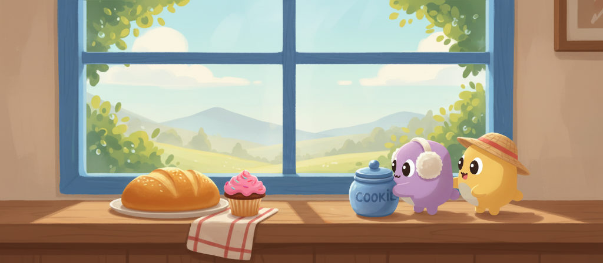
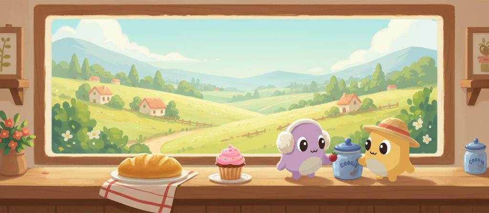
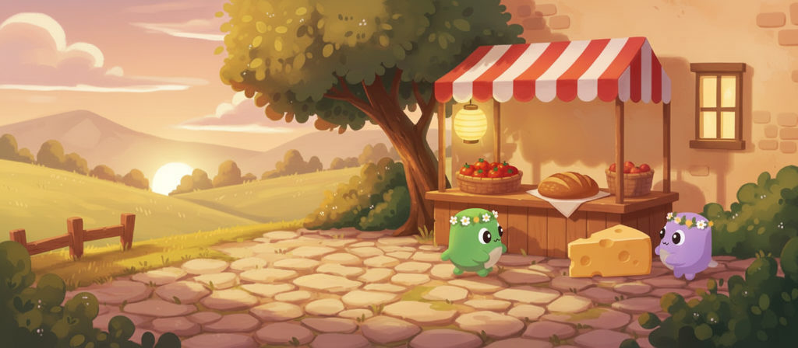

20261014_vista-night-0.jpg reviewer: turned down: The place differs from the first painting: cottages with lit windows appear on the left hills and at the far right edge, but there are no buildings in the morning painting. The lanterns on the blanket are also new objects. These are more than a change of light and sky. The framing, the two Peeplets and the night lighting are otherwise fine. (2 Peeplets, 1536x672) pass20261014_vista-night-1.jpg reviewer: passed (2 Peeplets, 1536x672) pass20261015_vista-morning-0.jpg reviewer: turned down: The Peeplets are too large. The purple Peeplet's body, hat excluded, is about 160 px tall, roughly 24% of the 672 px painting height, which is over the one-fifth limit. The yellow Peeplet's body, at about 145–150 px, is also at or just over the limit. (2 Peeplets, 1536x672) pass20261015_vista-morning-1.jpg reviewer: turned down: Both Peeplets are too large. The yellow one's body is about 155 px tall and the purple one's about 145 px (hat excluded), against a 134 px limit (a fifth of the 672 px painting height). (2 Peeplets, 1536x672) pass

20261016_vista-morning-0.jpg reviewer: turned down: The cookie jar has the word 'COOKIE' written on it, and the painting must contain no text. Both Peeplets are too large: the purple one's body is about 190 px tall and the yellow one's about 175 px, against a painting height of 672 px. That is roughly 26–28% of the height, above the one-fifth limit. (2 Peeplets, 1536x672) fail: other

20261016_vista-morning-1.jpg reviewer: turned down: Text appears in the painting: the two blue jars are labelled 'COOKIS'. Both Peeplets are also too large. The purple Peeplet's body is about 175 px tall and the yellow one's about 170 px, roughly a quarter of the 672 px painting height, which is over the one-fifth limit. (2 Peeplets, 1536x672) fail: other
20261101_vista-dusk-0.jpg reviewer: turned down: Compared with the morning painting, the scene has changed: an arched lit window has been added to the wall on the right where the morning painting shows only plain wall and bricks. The dusk version should show the same place with only the light and sky changed. (2 Peeplets, 1536x672) fail: third-arm

20261101_vista-dusk-1.jpg reviewer: turned down: Not quite the same place as the morning painting: a lit window has appeared on the wall to the right of the stall, where the morning painting shows only bare wall and bricks. (2 Peeplets, 1536x672) fail: third-arm
20261202_vista-morning-0.jpg reviewer: turned down: The cookie jar has the word 'COOKIES' written on it, and text is not allowed. The green Peeplet's body (about 175 px of the 672 px painting height) is also taller than a fifth of the painting's height, and the blue Peeplet's body appears to be at or over that limit too. (2 Peeplets, 1536x672) fail: other20261202_vista-morning-1.jpg reviewer: turned down: The Peeplets are too large. The green Peeplet with the flower crown has a body about 170px tall, roughly a quarter of the 672px painting height, which is over the one-fifth limit (about 134px). The blue Peeplet in the red beanie is also at or over the limit with its hat excluded. (2 Peeplets, 1536x672) fail: third-arm